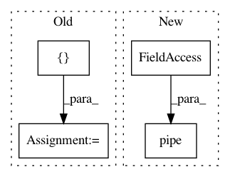

fbd16b4f301f09b8868b60a4762700f3251e2cdc,src/pudl/transform/ferc1.py,,plant_in_service,#Any#Any#,977
Before Change
for category in pis_df.columns.levels[0]:
tmp_df = pis_df.loc[:, category].copy()
tmp_df["amount_type"] = category
categorized_pis = pd.concat([categorized_pis, tmp_df])
categorized_pis.columns.name = None
pis_df = (
categorized_pis.reset_index()
.assign(
amount_type=lambda x: x["amount_type"]
.replace(
to_replace={
"begin_yr_bal": "starting_balance",
"addition": "additions",
"yr_end_bal": "ending_balance",
}
)
)
.pipe(_clean_cols, "f1_plant_in_srvce")
)
// Get rid of the columns corresponding to "header" rows in the FERC
// form, which should *never* contain data... but in about 2 dozen cases,
// they do. See this issue on Github for more information:
// https://github.com/catalyst-cooperative/pudl/issues/471
After Change
pis_df = (
unpack_table(
ferc1_df=ferc1_raw_dfs["plant_in_service_ferc1"],
table_name="f1_plant_in_srvce",
data_rows=slice(None), // Gotta catch "em all!
data_cols=[
"begin_yr_bal",
"addition",
"retirements",
"adjustments",
"transfers",
"yr_end_bal"
])
.pipe( // Convert top level of column index into a categorical column:
cols_to_cats,
cat_name="amount_type",
col_cats={
"begin_yr_bal": "starting_balance",
In pattern: SUPERPATTERN
Frequency: 4
Non-data size: 4
Instances
Project Name: catalyst-cooperative/pudl
Commit Name: fbd16b4f301f09b8868b60a4762700f3251e2cdc
Time: 2019-12-05
Author: zane.selvans@catalyst.coop
File Name: src/pudl/transform/ferc1.py
Class Name:
Method Name: plant_in_service
Project Name: catalyst-cooperative/pudl
Commit Name: bf7f740f3d6e2d419567109e2fdb0e264e3ad913
Time: 2019-11-16
Author: zane.selvans@catalyst.coop
File Name: src/pudl/transform/ferc1.py
Class Name:
Method Name: _plants_steam_clean
Project Name: catalyst-cooperative/pudl
Commit Name: 5b9a65c9301ca033f24da90f047c20c6d63533c4
Time: 2020-06-08
Author: zane.selvans@catalyst.coop
File Name: src/pudl/transform/eia861.py
Class Name:
Method Name: sales
Project Name: catalyst-cooperative/pudl
Commit Name: 27939af84f8bd78f8d15cc8719a3dec45b8c1284
Time: 2020-10-20
Author: cgosnell@catalyst.coop
File Name: src/pudl/analysis/allocate_net_gen.py
Class Name:
Method Name: allocate_gen_fuel_by_gen_pm_fuel